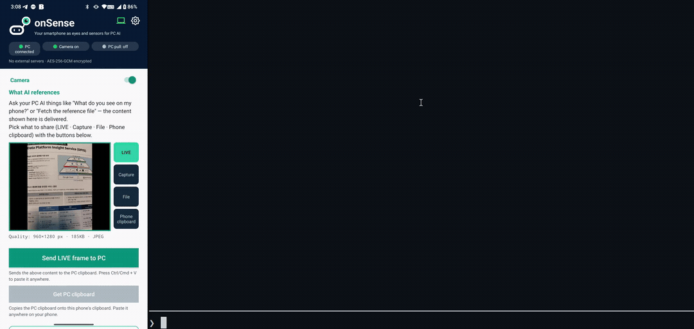

Real-world eyes for your PC AI agent — a local MCP bridge for your Android phone, so Claude Code, Claude Desktop, Codex, or any AI app that speaks MCP can use its camera, photos, and sensors, and move files & clipboard both ways. All over your own Wi-Fi.
uvx onsense pair
Needs uv (curl -LsSf https://astral.sh/uv/install.sh | sh) and the onSense app on your phone. No uv? pipx install onsense.
Not "drag a photo in." Your agent asks for a live frame the moment it needs one — hands-free, without leaving the loop. Plus sensors and files.

No ADB, no cloud, no account. One command on the PC, one QR scan on the phone.
Before you start: install the onSense app on your phone, and get uv on your PC (curl -LsSf https://astral.sh/uv/install.sh | sh, or pipx install onsense). Phone and PC must be on the same Wi-Fi.
Run uvx onsense pair on your PC — it prints a QR code and auto-registers the MCP server. (You have ~3 min to scan.)
In the onSense app, tap Scan PC QR. Then restart your AI client once so it loads the onsense tools.
“What do you see on my phone?” — delivered to Claude, Codex, or any MCP client. Stuck? Run uvx onsense doctor.
onSense is a real-world input device for a PC agent — not a consumer AI camera.
Start with the split-screen demo above, then point the phone at your own desk, document, label, or device panel. More short use-scene clips will be added after the first public user reports.
Move files, images, and text between phone and PC with no cable and no cloud — and let your AI read what you send.
Send a photo, document, video, or clipboard text straight to the PC — saved to disk, and pasteable with Ctrl+V.
Opt-in: the phone grabs whatever is on the PC clipboard — files first, then images, then text.
A pushed file becomes an MCP reference your AI can open and reason over — not just images.
Not just coding agents. onSense is a standard stdio MCP server, so it works with any MCP-compatible AI — Claude Code, Claude Desktop, Codex, or your own agent. The client just runs the server locally on the same Wi-Fi as your phone (a cloud-only web client can't reach it).
Pairs, registers the MCP server, and installs the /onsense slash command — one line.
uvx onsense pairAdd the server once (after pairing). Verified on Codex CLI 0.142.5. Codex sandboxes network by default — allow network access so it can reach your phone.
codex mcp add onsense -- uvx onsense serveAny MCP client works — add the stdio server to its config (run pair once first for the token).
{ "mcpServers": { "onsense": { "command": "uvx", "args": ["onsense","serve"] } } }
Your phone talks only to your own paired PC. There is no developer-operated cloud.
Phone ↔ PC only, on your local Wi-Fi. No developer servers.
Payloads encrypted; requests HMAC-SHA256 signed with replay rejection.
Camera runs only while sharing, with a persistent notification and an on-device access log.
onSense is early, local-first software for developers and power users. The PC bridge is public; the Android app is rolling out through Google Play.
uvx onsense pair.